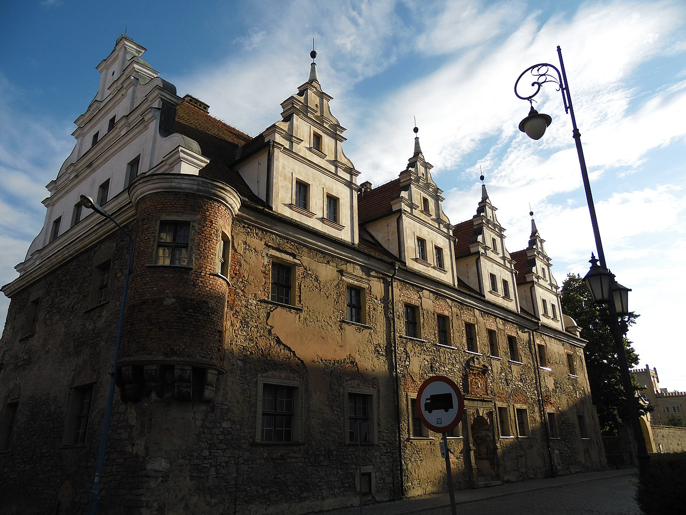
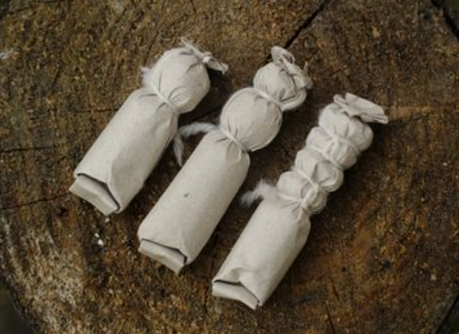
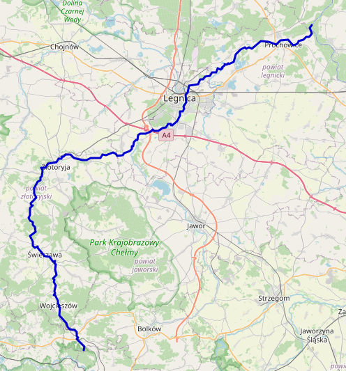
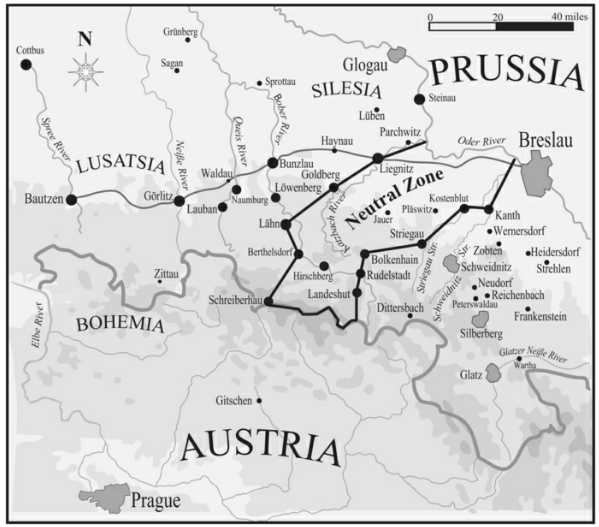
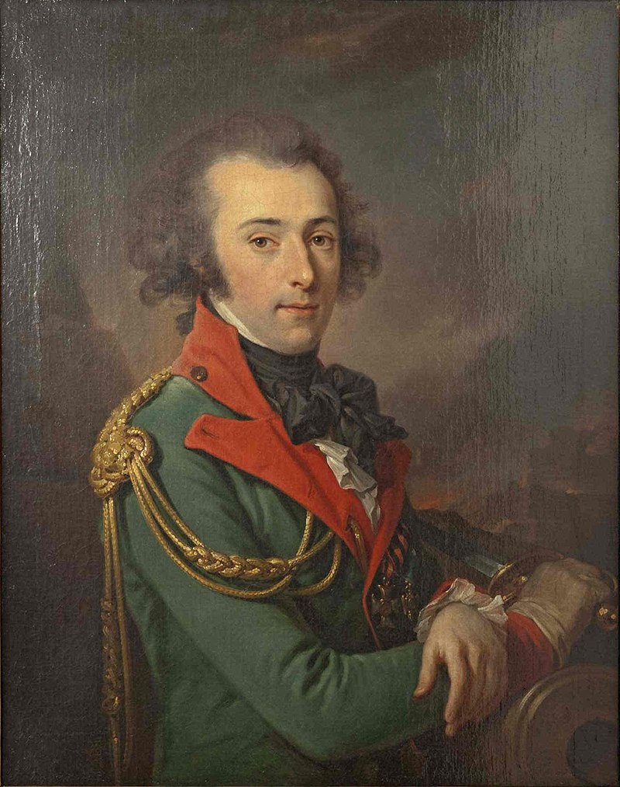

휴전 (5) - 차가운 남자의 함박웃음
게시: 2023-07-31T06:30:24+09:00
휴전이 되자 바클레이는 즉각 오데르 강을 넘어 후퇴할 준비를 서둘렀습니다. 그런데도 바클레이는 재빨리 슈바이트니츠에서 더 서쪽인 상(上) 슐레지엔의 슈트렐렌(Strehlen, 폴란드어로는 스첼린 Strzelin)으로 이동하려 했습니다. 프로이센군은 휴전까지 되었는데 뭐가 무서워 자꾸 도망치려고 드냐고 거세게 항의했지만, 바클레이는 절대 나폴레옹을 믿지 않았습니다. 그가 두려워한 것은 휴전은 시간 벌기용 위장일 뿐이고, 나폴레옹이 그 사이에 오데르 강 상류쪽으로 행군하여 러시아군의 퇴로를 완전히 끊어버리는 것이었습니다. 바클레이가 워낙 강력하게 주장했기 때문에, 결국 알렉산드르와 프리드리히 빌헬름 모두 후퇴에 동의해야 했습니다. 그는 아직 정식 조약이 서명되기도 전인 6월 3일 즉각 부대를 동쪽으로 행군시키기 시작했고, 군의 금고를 칼리쉬로 보냈을 뿐만 아니라 연합군이 오데르 강을 건너자마자 그 다리들을 폭파할 준비를 하도록 명령했습니다.

(슈트렐렌의 르네상스식 공작가 성채입니다. 슈틀렐렌은 18세기 초반까지도 대부분의 주민이 폴란드인이었으나, 1742년 프로이센에게 합병되면서 독일화가 진행된 곳입니다. 지금도 인구 1만2천 정도의 작은 도시입니다.)
난리가 난 것은 프로이센군이었습니다. 블뤼허 본인이 직접 프리드리히 빌헬름에게 '러시아군이 정말 오데르 강을 건너 후퇴한다면 프로이센군은 러시아군과 결별해야 한다'라고 말할 정도로 프로이센군은 강경했습니다. 뮈플링 본인의 기록에 따르면 자신이 바클레이에게 읍소하다시피 하며 '프로이센군은 절대 러시아군과 함께 오데르 강을 건널 수 없다, 만약 그렇게 슐레지엔을 포기하고 물러간다면 프로이센군의 식량과 급여는 어디서 걷은 세금으로 충당하겠는가'라며 구차한 사정을 날 것 그대로 보여주었으나, 바클레이는 정말 어깨를 으쓱해보이며 '짜르의 군대를 헛되이 희생시킬 수 없으니 일단 후퇴했다가 재정비가 끝나는 6주 후에 돌아오겠다, 프로이센군은 그때까지 스스로를 잘 돌보기 바란다'라고 말했다고 합니다. 이런 와중에 그나이제나우는 여기저기에 편지를 기관총처럼 쏘아대며 '나폴레옹이 두려워하는 것은 후방 교통로가 끊어지는 것이니 오히려 야우어(Jauer) 쪽으로 프로이센군이 진격하여 나폴레옹의 뒤를 위협하면 후퇴하는 러시아군을 쫓을 생각을 못하게 될 것'이라며 공세적 진격을 주장하기도 했지만 모두 실질적인 대책이 될 수 없는 공염불에 불과했습니다. 러시아군이 없는 3만4천 정도의 프로이센군은 정말 아무 것도 아니었습니다. 이 휴전을 이용하여 프로이센군이 할 수 있는 것은 병력을 충원하는 것이었습니다. 그나이제나우의 계산에 따르면 8월 중순까지 최대 28만에 가까운 병력을 동원할 수 있었습니다. 당장 6월 초까지 브레슬라우에서만 3만2천의 보병과 3천의 기병을 국민방위군(Landwehr)으로 소집해놓았다는 보고가 있었습니다. 그러나 문제는 무장이었습니다. 그 서류상으로 존재하는 브레슬라우의 국민방위군 중 무장에 대한 이야기는 1천7백의 기병들에게 기병도가 지급되었다는 것 뿐이었습니다. 그나이제나우는 같은 비율을 적용하면 대충 3만2천의 보병들 중 절반 정도가 머스켓 소총을 지급 받았을 것이라고 추정했지만, 그건 행복회로를 돌린 것일 뿐 실제로는 어땠는지 알 수 없었습니다. 실제로 프로이센 정규군도 무장이 충분한 편은 아니었습니다. 기억들 하시겠지만 맨 처음 1813년의 프로이센 해방 전쟁을 시작할 때도 프로이센군은 머스켓 소총 같은 기본적인 무기가 부족하여 영국의 무기 공여에 크게 의존하는 형편이었습니다. 바클레이가 부득부득 오데르 강을 건너 후퇴하겠다는 이유 중 하나가 탄약 부족이었는데, 프로이센군도 그걸 제공하지 못해서 바클레이의 발목을 잡지 못하고 있었습니다. 그나이제나우가 편지에서 불평하기를, 바클레이가 요구하는 흑색화약의 양은 무려 16만발의 머스켓 탄약포를 만들 수 있는 분량인데, 하루종일 격렬한 전투를 벌였던 뤼첸 전투에서 블뤼허의 군단 전체가 소모한 탄약이 불과 5천발에 불과했다면서, 바클레이는 그저 후퇴할 핑계거리를 만들고 있을 뿐이라고 했습니다. 당시 머스켓 탄약포 한 발에 들어가는 흑색화약의 양은 130 그레인(grain) 즉 대략 8.42g이었으니, 16만발이라고 하면 바클레이가 요구했던 화약의 약은 1.35톤 정도였습니다. 이건 당시 네 마리의 말이 끄는 대형 마차 1대분에 해당하는 무게였는데, 그걸 제공하지 못할 상황이었습니다.

(머스켓 소총의 탄약포입니다. 종이로 만들어진 저 탄약포 앞에 납탄이 들이었고, 뒤에는 흑색화약이 있습니다. 저 종이도 원래는 아무 종이로나 만들면 안 되고 잘 찢어지지 않되 이빨로 물어 뜯으면 충분히 쉽게 뜯어질 정도의 질긴 종이를 써야 했습니다. 그래서 당시 제지업체의 주요 제품 중 하나가 '탄약포용 종이'일 정도로 나름 정교한 물건이었습니다. 물론 당시 프로이센군은 아무 신문지나 대충 써야 할 상황이었을 것입니다.) 프로이센군이 아무리 길길이 뛰어도 지휘권은 바클레이에게 있었습니다. 그나이제나우는 샤른호스트 대신 프리드리히 빌헬름의 수석 부관 역할을 하면서 러시아군과의 소통 창구 역할을 하던 크네제벡에게도 빗발치듯 편지를 써대며 러시아군을 설득하든가 아니면 이제 러시아군과 헤어져야 한다고 주장했습니다. 러시아군의 실제 상황은 물론 개인적으로 바클레이를 너무나 잘 알던 크네제벡은 어쩔 수 없다는 입장이었습니다. 크네제벡도 바클레이를 말릴 방법이 없었습니다. 크네제벡이 무엇보다 우려했던 것은 오스트리아였습니다. 러시아군이 오데르 강을 넘어가 버리면 오스트리아가 용기를 잃고 대나폴레옹 전쟁에 참전하지 않을 가능성이 매우 컸기 때문이었습니다. 그런데 정작 6월 4일 맺어진 정식 휴전 협정의 내용은 바클레이와 그나이제나우 모두를 다소 뻘쯤하게 만들었습니다. 나폴레옹이 굉장히 큰 양보를 했던 것입니다. 이 협정에 따르면 후퇴해야 하는 것은 나폴레옹이지 바클레이가 아니었습니다. 휴전 협정에 따르면 프랑스군은 카츠바(Katzbach, 폴란드어로는 카차바 Kaczawa) 강 서쪽으로 물러나야 했고, 연합군은 현 위치에 남아있을 수 있었습니다. 대신 브레슬라우는 중립으로 두어야 했습니다.

(카츠바흐는 이미 나폴레옹이 손에 넣은 브레슬라우로부터 약 60~80km 서쪽에 있는 작은 강입니다. 가령 지도 중앙의 야우어도 이 강의 동쪽에 위치해 있습니다. 나폴레옹으로서는 크게 양보를 한 것이지요.) 그나이제나우가 위에서 언급한 것처럼 나폴레옹은 후방 교통로가 끊어지는 것이 무척 껄끄러웠고 현 상태에서 오스트리아가 참전하면 이렇게 보헤미아 국경을 따라 길게 늘어진 전선이 무척 불리하다는 것을 나폴레옹도 잘 알고 있었기 때문에, 야우어를 내주고 카츠바흐 강 서쪽으로 물러서기로 했던 것입니다. 당시 나폴레옹에게 가장 중요한 것은 어떻게든 기병대를 확충하고 오스트리아가 참전하지 않도록 설득하는 것이었을 뿐, 20~30km 정도 후퇴하는 것은 아무 문제가 아니었습니다. 하지만 이때 나폴레옹이 이렇게 물러서지 않았다면, 프로이센과 러시아는 마침내 결별했을 가능성이 매우 컸습니다. 나폴레옹은 그 사실을 알 방법이 없었을 뿐이지요. 만약 코삭 기병대가 러시아군 소속이 아니라 프랑스군 소속이었다면, 그래서 당시 그나이제나우가 후방으로 뻔질나게 보내던 분노의 편지들 중 단 한 통이라도 코삭 기병들 손에 나포되어 나폴레옹 손에 들어갔더라면, 1813년 전쟁의 향방은 오늘날 우리가 아는 것과는 크게 달라질 수도 있었습니다.

(6월 4일 정식으로 맺어진 휴전 협정의 내용에 따르면 프랑스군과 연합군 사이에는 대략 20~40km에 달하는 중립 완충 지대가 존재했습니다. 이 구역 안으로는 양군 모두 들어가서는 안 되었습니다만, 결국 프랑스군은 이 중립 지대의 서부 지역에서도 식량을 조달해야 했습니다. 브레슬라우는 위치 상으로는 연합군 구역이지만, 연합군은 브레슬라우에 입성하지 못하게 되어 있었습니다.)
나폴레옹이 이렇게 통 큰 양보를 한 것은 연합군 장군들에게도 꽤 뜻밖이었나 봅니다. 러시아군에서 복무 중이던 프랑스 망명 귀족 랑제론(Louis Alexandre Andrault de Langeron) 장군은 슈바이트 인근에서 후퇴 준비를 하다가 이 소식을 듣고는 깜짝 놀랐고, 이것이 자신들을 더 후퇴하지 않게 유인한 뒤 들이치려는 나폴레옹의 속임수라고 의심했다고 회고록에 적을 정도였습니다. 전령이 가져온 이 소식을 믿을 수 없었던 랑제론은 말을 달려 바클레이의 사령부까지 직접 찾아갔는데, 거기서 랑제론은 보기 힘든 광경을 보았습니다. 언제나 차갑고 냉정한 표정이던 바클레이가 활짝 웃고 있었던 것입니다. 바클레이는 오데르 강을 넘어 후퇴한다는 계획을 철회했고, 그나이제나우도 더 이상 분노의 편지질을 하지 않아도 되었습니다. 그만큼 나폴레옹의 통 큰 양보는 분열 직전이던 연합군의 온갖 문제를 한꺼번에 해결해준 셈이 되었습니다.

(랑제론 장군입니다. 나폴레옹보다 9살 연상이었던 그는 랑제론 백작, 라코스트 후작, 쿠니 남작 등 여러가지 작위를 가진 귀족 집안에 태어나 10대때부터 총사령관 삼촌, 사촌형 상관 밑에서 군 경력을 쌓았습니다. 1788년 25세의 나이로 연대장 보직을 가진 대령이 된 그는 다음해 대혁명이 터지자 재빨리 프랑스를 탈출하여 러시아로 가서 1790년부터 러시아군에서 대령으로 군생활을 시작했습니다. 그는 스웨덴 및 투르크와의 전쟁에서 잘 싸워 공훈을 세웠고, 6년 뒤에는 장군으로 승진하는 등 자신의 힘으로 나름 탄탄한 경력을 쌓았습니다. 그는 러시아에 완전히 정착하여, 부르봉 왕가 복위 이후에도 프랑스에 가끔 여행은 갔지만 러시아에 살며 우크라이나의 오뎃사, 헤르손, 크림 반도 일대의 총독 역할을 수행했습니다. 지금도 오뎃사에는 랑제론의 이름을 딴 거리가 있다고 합니다. 이 초상화는 1791년, 그가 러시아에 막 정착하여 아직 대령 계급으로 있을 때 그려진 것입니다.) 이제 관점을 자신이 어떤 실수를 저질렀는지 아직 모르고 있던 나폴레옹 쪽으로 가져가 보도록 하겠습니다. Source : The Life of Napoleon Bonaparte, by William Milligan Sloane Napoleon and the Struggle for Germany, by Leggiere, Michael V https://en.wikipedia.org/wiki/Kaczawa https://en.wikipedia.org/wiki/Louis_Alexandre_Andrault_de_Langeron https://capandball.com/69-ball-buck-and-ball-and-buckshot-cartridges-of-the-u-s-army/ https://en.wikipedia.org/wiki/Strzelin